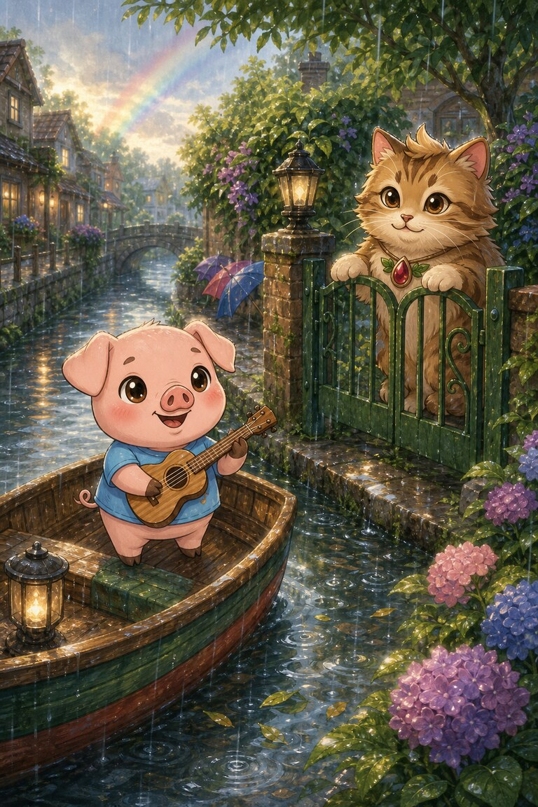
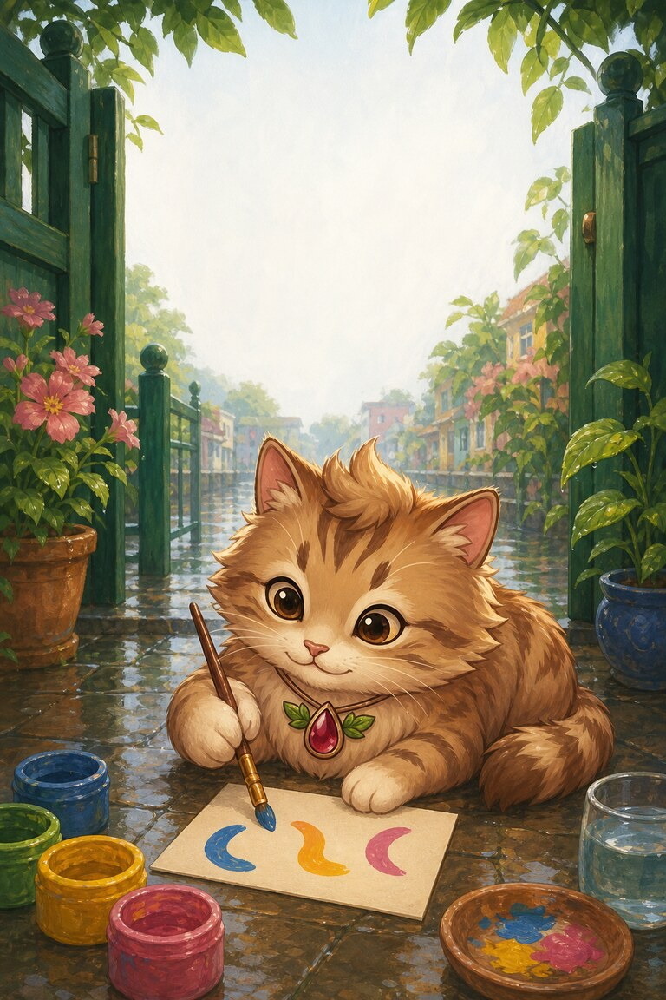
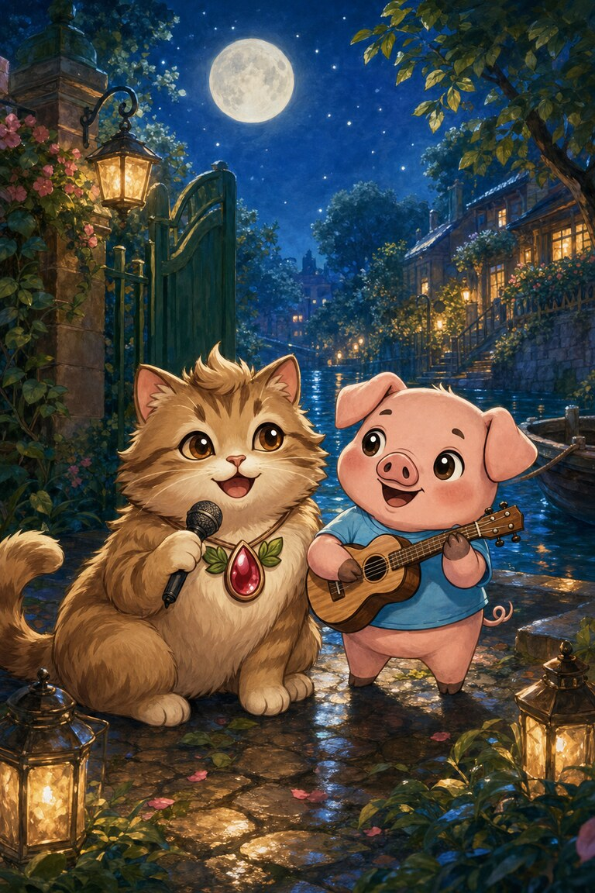
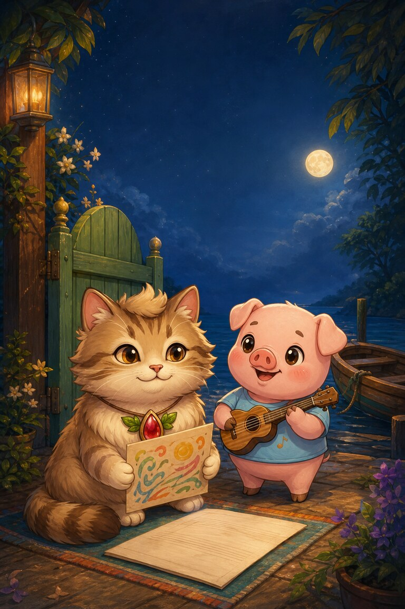

Page 1 of 5
Meow-inara waits by the green gate for a music sheet in the mail. Rain dots her coat.
A five-page rainy-night duet for practising vowel teams: ai, ee, oa and ea.
Read together: practise the focus sounds with an adult. This story uses wider vocabulary and is not a controlled independent decodable stage.
6 printed pages · 1.2 MB · A4 or US Letter. Download PDF · Open PDF to printOpens in a new tab. Use the PDF viewer's Print control. To use less ink, read online and choose only the questions on page 6 in Print.
Meow-inara waits by the green gate for a music sheet in the mail. Rain dots her coat.

The sheet does not arrive. Across the road, Pork-ulele plays the tune from a small boat.

Meow-inara cannot see each note, so she listens for the beat. She paints three sound marks: slow, high, sweet.

They meet beneath the moon and play a duet. Her clear notes float over his deep chords.

The missing sheet arrives the next day, but Meow-inara keeps her painted score. A good team can hear a new way forward.
She listens and paints sound marks. She listens for the beat and paints marks for the sounds she hears.
mail. Rain and mail both use the ai vowel team.
SnackPack Sentences & Spelling has the full Reading Trail, longer stories, word packs and eight literacy games.
Next Reading Trail practice · read togetherQuill‑Berry’s Ending Clues
Explore another book · read togetherBaby Bulldogs at the Playground
Know a family or class who would enjoy it?